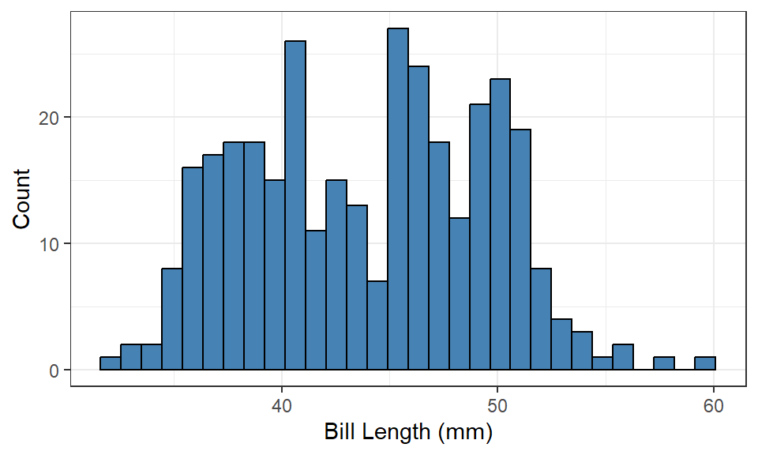
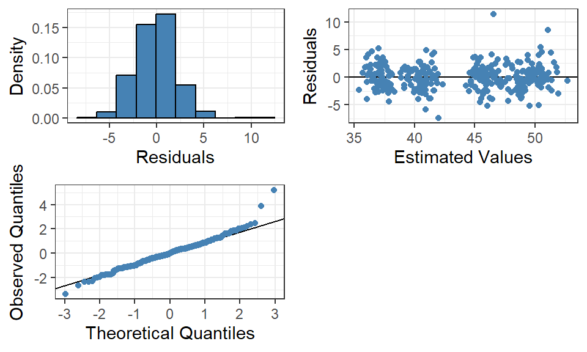

# Don’t forget to install the package if you haven’t already
# install.packages("palmerpenguins")
# Load the package with the dataset
require(palmerpenguins)
# Filter out observations with missing values
penguins <-
penguins |>
filter(!is.na(sex))18 Advanced regression topics
In the vast majority of cases, a simple linear regression model will not be sufficient to model a phenomena of a response variable. Instead the more general case involves multiple explanatory variables of different types that together allow us to describe the response. We can extend the theory presented in Chapter 17 to multiple linear regression, expand to non-linear regression and non-parametric regression methods that does not require the same assumptions of the data or model.
18.1 Multiple linear regression
Following the steps in simple linear regression we begin with visualizing the data. In the case of multiple linear regression we now have a set of possible explanatory variables at our disposal to visualize and assess their viability in the model.
As an example we will be using the penguins dataset collected by a research team in Antarctica between 2007 and 2009. The team gathered information on 333 penguins across three islands near the Palmer Research Station. The dataset is available via the palmerpenguins package (Horst, Hill, and Gorman 2020) and can be loaded into R using the following code:
Note
As part of the data exploration, we can identify missing values in some variables and we choose to filter them out in this example. Handling missing values is a large field in statistics, and there are several methods that can impute (estimate the missing value) so we don’t have to remove entire observations from the analysis.
A simple imputation method is mean imputation, where we replace the missing value with the mean of the other measurements, or the mode if a qualitative variable is being imputed. In practice, more advanced methods are used that can be applied in many different cases and also take other information about the observations into account.
We can take a closer look at a sample of the dataset in Table 18.1.
# Generate a formatted table using kable() and style it with kable_styling()
penguins |>
slice_head(n = 5) |>
kable() |>
kable_styling("striped")| species | island | bill_length_mm | bill_depth_mm | flipper_length_mm | body_mass_g | sex | year |
|---|---|---|---|---|---|---|---|
| Adelie | Torgersen | 39.1 | 18.7 | 181 | 3750 | male | 2007 |
| Adelie | Torgersen | 39.5 | 17.4 | 186 | 3800 | female | 2007 |
| Adelie | Torgersen | 40.3 | 18.0 | 195 | 3250 | female | 2007 |
| Adelie | Torgersen | 36.7 | 19.3 | 193 | 3450 | female | 2007 |
| Adelie | Torgersen | 39.3 | 20.6 | 190 | 3650 | male | 2007 |
From the table, we can identify the following variables:
species: The penguin’s species is a qualitative variable. We cannot say one species is “better” or “larger” than another. The categories cannot be ranked, so this variable follows a nominal scale.island: The island where the penguin was located at the time of measurement is also a qualitative variable that cannot be ranked. This variable also follows a nominal scale.bill_length_mm: A quantitative variable measuring the bill length in millimeters (mm). Length is a typical variable that follows a ratio scale because it has a clear zero point.bill_depth_mm: Measures the bill depth in millimeters and follows the same reasoning as bill length.flipper_length_mm: Another variable measuring length, this time the flipper length. Same reasoning applies.body_mass_g: The penguin’s weight in grams. Weight also has a clear zero point and is considered quantitative, following a ratio scale.sex: The penguin’s biological sex is a qualitative variable that cannot be ranked—nominal scale.year: This variable is a bit harder to assess. It measures the year the penguin was measured as a numeric variable (integers, so R stores it asint), but in this context, it may not be considered quantitative. For simplicity, we can say that since it’s possible to calculate differences between years (e.g., 1 year between 2007 and 2008), but there’s no clear zero point, this variable can be considered quantitative and follows an interval scale.
We will focus on bill length as our response variable in the following examples. Since the dataset is from an observational study, we cannot draw conclusions about causal relationships, but we can investigate correlations between the penguins’ various characteristics.
18.1.1 Visualizing the response variable
As a first step in the exploratory analysis, we can visualize the distribution of the response variable using a histogram.
ggplot(penguins) + aes(x = bill_length_mm) +
geom_histogram(bins = 30, fill = "steelblue", color = "black") +
theme_bw() +
labs(x = "Bill Length (mm)", y = "Count")

Figure 18.1 gives us a picture of the variable’s characteristics and whether the data contains any outliers that might be difficult to capture with a model. Bill length appears to have a bimodal structure with two centers of mass around 38–40 and 50 mm. Most observations fall between approximately 35–52 mm, but there are a few around 58–60 mm that seem unusually large.
The fact that the distribution doesn’t look normal doesn’t matter, we need to examine the distribution of the response variable with respect to the explanatory variables to check a regression model’s assumptions.
18.1.2 Pairwise Relationships
The dataset contains several potential explanatory variables that could be included in a model. Depending on how a study was conducted, variables may be excluded if they don’t have a logical relationship with the response variable, for example, ID variables are not relevant to investigate. In our example data, there is a variable describing the year the observation was made, which we can initially assume doesn’t have a logical relationship with bill length. That leaves six other variables that could be included in the model fitting.
18.1.2.1 Quantitative explanatory variables
Similar to Figure 17.1 we create scatter plots between each pair of continuous explanatory variable and the continuous response and investigate the four questions about the relationship.
- Is the relationship linear?
- Is the relationship positive or negative?
- Is the relationship strong or weak?
- Are there any outliers?
ggplot(penguins) + aes(x = body_mass_g, y = bill_length_mm) +
geom_point(color = "steelblue") +
theme_bw() +
labs(x = "Body Weight (g)", y = "Bill Length (mm)")Figure 18.2 shows that the relationship appears mostly linear, as a constant change (increase) in body weight leads to a constant change (increase) in bill length. Most points seem to follow this trend, indicating a relatively strong relationship. However, there are several observations (highlighted in Figure 18.3) that deviate from this. These observations have lower body weight but the same bill length as penguins with higher body weight, which affects the strength of the relationship.
\[ r = 0.589 \]
Since the correlation coefficient is close to 0.6, it suggests the relationship is moderately strong.
Figure 18.2 also shows some observations that could be considered outliers. For example, \(\{x = ~2700, y = ~47\}\) and \(\{x = ~3700, y = ~58\}\) are observations that deviate significantly from the expected relationship and other observations. A detailed analysis of outliers will be covered in later chapters, but for exploratory purposes, we note that some observations may affect model fitting.
In summary, the relationship between body weight and bill length is:
- linear,
- positive,
- moderately strong,
- with possible outliers.
When we build our first model, it will likely be sufficient to include a simple \(\beta_1 \cdot \text{body weight}\) term.
18.1.2.2 Other quantitative variables
The same exploration should be done for all quantitative variable pairs, in this case also bill depth and flipper length:
Both variables appear to have a linear relationship with the response variable. Figure 18.4 suggests that the relationship between bill depth and bill length is weakly negative (\(r = -0.229\)) as the points are widely scattered, while Figure 18.5 suggests a somewhat stronger positive relationship (\(r = 0.653\)), similar to Figure 18.2.
A new phenomenon visible in Figure 18.4 is that we seem to have several clusters of points, each with a positive relationship, even though the overall relationship was interpreted as weakly negative. If we had only calculated the correlation coefficient, this phenomenon would have escaped our analysis. Figure 18.6 is an example of Simpson’s Paradox, which we will explore further later in this material.
18.1.2.3 Qualitative explanatory variables
We cannot use scatter plots to visualize the relationship between qualitative explanatory variables and a continuous response variable. Instead, we need visualizations that account for the qualitative scale, usually ordinal or nominal. There are several ways to visualize the distribution of the response variable across levels of the explanatory variable, such as grouped histograms or box plots, but one type of visualization that shows distribution details is a violin plot. A violin plot is a mirrored density plot, where areas with many observations have a larger area under the curve.
Using ggplot2, we can create such a plot with geom_violin():
ggplot(penguins) +
aes(x = species, y = bill_length_mm) +
geom_violin(fill = "steelblue") +
theme_bw() +
labs(x = "Species", y = "Bill Length (mm)")Figure 18.7 shows that Adelie penguins generally have shorter bill lengths compared to Chinstrap and Gentoo, as the center of the distribution is around 38–40 mm. Chinstrap penguins have a slightly larger proportion with bill lengths over 50 mm, while Gentoo have a larger proportion under 50 mm.

Figure 18.8 has a slightly different shape, with two large masses for each category. This likely indicates that sex within species has an effect, and that males generally have longer bills than females of the same species.
Figure 18.9 suggests that penguins on Torgersen Island have shorter bill lengths than those on other islands. However, we need to consider whether this variable actually describes the relationship or if another phenomenon explains it, for example if one species is more prevalent on one specific island, like a confounder/control.
The conclusion from these visualizations is that there appears to be a relationship between species and sex with bill length, and these two variables should be included in the model. We now need to consider how to appropriately include a qualitative variable containing text in a mathematical model that requires numerical input.
18.1.3 Multiple linear regression model
After summarizing observations from visualizations and descriptive statistics, the next step in the process is to build the structure of the model. The simplest approach is to start with the quantitative variables, which (usually) only require one term each in the model. \[ \begin{aligned} \text{Bill Length} = &\beta_0 + \beta_1 \cdot \text{Body Weight} + \beta_2 \cdot \text{Flipper Length} + \\ &\beta_3 \cdot \text{Bill Depth} + \cdots + \varepsilon \end{aligned} \tag{18.1}\]
Important
Regardless of whether the model includes one or several explanatory variables, we must always keep in mind the five assumptions presented in Section 16.1.1, especially the assumption of linearity. If we’ve discovered non-linear relationships in the pairwise visualizations, it’s often not enough to include just a single term in the model, but we might need to look at transformations.
18.1.4 Indicator variables
A regression model cannot directly handle qualitative variables, such as \(\beta_4 \cdot \text{Species}\), because the variable’s values represent categories, not values from a numerical scale. This applies even if the qualitative variable is numerically coded, e.g. 1, 2, 3 for each species. A slope parameter describes the constant change in the response variable when the corresponding explanatory variable increases by one unit, but a qualitative variable usually has no unit and no constant changes between adjacent values. Instead, we must transform the qualitative variable into numeric form using indicator variables (also called dummy variables).
As the name suggests, indicator variables are used to indicate which category an observation has for the qualitative variable. We need to create a limited number of indicator variables that clearly show exactly one category per observation.
Assume a qualitative variable has 3 categories: \[ \begin{bmatrix}A\\B\\C\end{bmatrix} \] We can start by creating an indicator variable for category A that takes the value 1 if the observation has category A, and 0 otherwise:
\[ \begin{bmatrix}A\\B\\C\end{bmatrix} = \begin{bmatrix}1\\0\\0\end{bmatrix} \] With only one indicator variable, we cannot clearly identify whether an observation has category B or C, since both have the value 0. So we add another indicator variable that takes the value 1 if the observation has category B, and 0 otherwise:
\[ \begin{bmatrix}A\\B\\C\end{bmatrix} = \begin{bmatrix}1 & 0\\0 & 1\\0 & 0\end{bmatrix} \] It might seem natural to create an indicator for the last category as well, but it’s not necessary. If both indicators are 0, we’ve successfully identified that the observation has category C, and another variable would just be redundant.
The last category also becomes our reference category, the category against which the effects of the other indicator variables are interpreted. When interpreting slope parameters for indicator variables — e.g., the indicator for A — the change in \(Y\) is measured when \(X = A\) compared to when \(X = C\).
Important
Mathematically, creating three indicator variables would model a perfect relationship and cause singularity issues in the calculations.
In general, we create \(\text{number of categories} - 1\) indicator variables for each qualitative variable to be included in a regression model. The choice of reference category is arbitrary, but typically the first or last category is used.
To complete the modeling from Equation 18.1, we’ll include Species and Sex in the model. We need to create two sets of indicator variables with two and one indicators respectively:
\[\begin{align*} Gentoo &= \begin{cases} 1 \quad \text{if species is Gentoo}\\ 0 \quad \text{otherwise} \end{cases}\\ Chinstrap &= \begin{cases} 1 \quad \text{if species is Chinstrap}\\ 0 \quad \text{otherwise} \end{cases} \end{align*}\]
and
\[\begin{align*} Male &= \begin{cases} 1 \quad \text{if male}\\ 0 \quad \text{otherwise} \end{cases} \end{align*}\]
to finally create the following model: \[ \begin{aligned} \text{Bill Length} = &\beta_0 + \beta_1 \cdot \text{Body Weight} + \beta_2 \cdot \text{Flipper Length} + \\ &\beta_3 \cdot \text{Bill Depth} + \beta_4 \cdot \text{Gentoo} + \beta_5 \cdot \text{Chinstrap} + \\ &\beta_6 \cdot \text{Male} + \varepsilon \end{aligned} \tag{18.2}\] where Adelie and Female act as the reference categories for each qualitative variable.
18.1.5 Model estimation
We can denote the estimated model with its regression coefficients as:
\[ \begin{aligned} \hat{y}_i = &b_0 + b_1 \cdot x_{1i} + b_2 \cdot x_{2i} + b_3 \cdot x_{3i} + \\ &b_4 \cdot x_{4i} + b_5 \cdot x_{5i} + b_6 \cdot x_{6i} \end{aligned} \tag{18.3}\]
where \[\begin{align*} \hat{y}_i &= \text{estimated value of the response variable for observation } i\\ b_0 &= \text{estimate of the intercept}\\ b_1 - b_6 &= \text{estimates of the slope parameters} \end{align*}\]
To estimate this linear regression model in R, we again make use of the lm() function but adjust the formula argument to encompass more than one variable. Generally, the format is y ~ x, where x consists of the explanatory variables, for example bill_length_mm ~ body_mass_g + bill_depth_mm but there exist a shorthand (~ .) that makes use of all other variables present in the data in the right hand side.
In order for this to work we need to select only the variables we want to include in the model before AND we must also ensure that all variables in the dataset have the correct variable type as expected. We identified in Section 17.1 that we had three quantitative variables and two qualitative variables, which in R correspond to the types numeric and Factor. Using Factor simplifies the transformation into indicator variables because R knows it must do so for the model to work. If the qualitative variables were of type character or coded as numeric, R might not create indicator variables and the estimated model would be misinterpreted. We can inspect the variable types in penguins using str().
# Only include variables that were found to be related to the response variable
modelData <-
penguins |>
select(
species,
bill_depth_mm,
flipper_length_mm,
body_mass_g,
sex,
bill_length_mm
)
# Fit the specified model
simpleModel <- lm(formula = bill_length_mm ~ ., data = modelData)summary(simpleModel) |>
coef() |>
as_tibble(rownames = NA) |>
rownames_to_column() |>
rename(
` ` = rowname,
Estimate = Estimate,
StdError = `Std. Error`,
`t-value` = `t value`,
`p-value` = `Pr(>|t|)`
) |>
kable(
digits = 4
) |>
kable_styling("striped")| Estimate | StdError | t-value | p-value | |
|---|---|---|---|---|
| (Intercept) | 15.0166 | 4.3742 | 3.4330 | 0.0007 |
| speciesChinstrap | 9.5655 | 0.3497 | 27.3508 | 0.0000 |
| speciesGentoo | 6.4044 | 1.0304 | 6.2154 | 0.0000 |
| bill_depth_mm | 0.3130 | 0.1541 | 2.0316 | 0.0430 |
| flipper_length_mm | 0.0686 | 0.0232 | 2.9608 | 0.0033 |
| body_mass_g | 0.0011 | 0.0004 | 2.5617 | 0.0109 |
| sexmale | 2.0297 | 0.3892 | 5.2153 | 0.0000 |
Table 18.2 shows the estimated slope parameters (coefficients). For example, we can see that for each additional gram a penguin weighs, the bill length increases by approximately 0.0011 mm on average given that all other variables are held constant.
Important
This last part of the interpretation must be included in a multiple linear regression, as a change in multiple variables would result in a combined change in the response variable relative to each coefficient. In order to isolate one variable’s relationship with the response, we need to isolate its interpretation as well.
Indicator variables are interpreted within each set of connected coefficients, relative to the assigned reference category. For example, Gentoo penguins have on average a 6.4 mm longer bill than the reference category Adelie penguins, given that all other variables are held constant.
18.1.6 Model evaluation
After estimating a model based on observations from visualizations and descriptive statistics, we move on to the residual analysis to determine if th model is appropriate and meets the model assumptions. Using the custom function we designed in Section 17.3.2 we simply input the estimated model:
diagnosticPlots(simpleModel)

In summary, Figure 18.10 shows that the residuals meet the assumptions of normal distribution with mean 0 and constant variance. There are no clear patterns in any plot that suggest otherwise or that the model fails to capture part of the relationship. A few outliers have been identified, specifically two large positive residuals which might warrant a closer look as to why they are so large, but nothing that deviates from the model assumptions.
18.1.7 Model inference
Using the different sources of variation, we can calculate tests for the whole model or parts of it using various F-tests, while the individual parameter estimates and their associated standard errors can be used in tests for individual slope parameters.
18.1.7.1 Sequential Sums of Squares
The calculations for an ANOVA table are performed automatically in R when we use lm(), and we can extract the table from the model object using anova() (see Tip 17.1).
anova(simpleModel) |>
round(4) |>
kable() |>
kable_styling("striped")| Df | Sum Sq | Mean Sq | F value | Pr(>F) | |
|---|---|---|---|---|---|
| species | 2 | 7015.3857 | 3507.6929 | 713.4929 | 0 |
| bill_depth_mm | 1 | 818.5050 | 818.5050 | 166.4905 | 0 |
| flipper_length_mm | 1 | 198.2269 | 198.2269 | 40.3210 | 0 |
| body_mass_g | 1 | 160.3760 | 160.3760 | 32.6218 | 0 |
| sex | 1 | 133.7191 | 133.7191 | 27.1995 | 0 |
| Residuals | 326 | 1602.6899 | 4.9162 |
By default, R breaks down the model’s sum of squares (SSR) into the individual explanatory variables using sequential (also called conditional) sums of squares. A sequential sum of squares describes how much variation an explanatory variable contributes given that the model already includes other explanatory variables.
The order presented in Table 18.3 is the order in which variables are added to the model. For example, the second row shows \(SS(\text{bill\_depth\_mm} | \text{species})\), meaning bill depth contributes 818.505 additional unique explained variation in the response variable that species has not already explained. The third row shows \(SS(\text{flipper\_length\_mm} | \text{species}, \text{bill\_depth\_mm})\), i.e., how much additional unique variation flipper length explains in a model that includes bill depth and species.
Note
Mathematically, the sequential sum of squares is calculated as the difference in either SSE or SSR between two models—one without the added variable and one with it included. Suppose we want to add variable \(X^*\) to a model that already has \(k\) other variables, then the calculation is:
\[ \begin{aligned} SS(X^*|X_1, \ldots, X_k) &= SSE_{X_1, \ldots, X_k} - SSE_{X_1, \ldots, X_k, X^*} = \\ &= SSR_{X_1, \ldots, X_k, X^*} - SSR_{X_1, \ldots, X_k} \end{aligned} \tag{18.4}\]
Note that SSR increases with each additional variable added to the model, while SSE always decreases. Variation must always be positive, hence we calculate \(SSE_{reduced} - SSE_{full}\) or \(SSR_{full} - SSR_{reduced}\).
Sequential sums of squares are affected by the order in which variables are added to the model. Let’s change the order of the explanatory variables when estimating the model:
model <- lm(formula = bill_length_mm ~ sex + ., data = modelData)
anova(model) |>
round(4) |>
kable() |>
kable_styling("striped")| Df | Sum Sq | Mean Sq | F value | Pr(>F) | |
|---|---|---|---|---|---|
| sex | 1 | 1175.4780 | 1175.4780 | 239.1017 | 0.0000 |
| species | 2 | 6975.5916 | 3487.7958 | 709.4457 | 0.0000 |
| bill_depth_mm | 1 | 64.4987 | 64.4987 | 13.1196 | 0.0003 |
| flipper_length_mm | 1 | 78.3815 | 78.3815 | 15.9434 | 0.0001 |
| body_mass_g | 1 | 32.2629 | 32.2629 | 6.5625 | 0.0109 |
| Residuals | 326 | 1602.6899 | 4.9162 |
In Table 18.4 we see that \(SS(\text{sex}) = 1175.478\), which is significantly higher than \(SS(\text{sex}|\text{species}, \text{bill\_depth\_mm}, \text{flipper\_length\_mm}, \text{body\_mass\_g}) = 133.7191\) from Table 18.3. The variable sex contributes a lot of variation when it is alone in a model, but when added to a model that already includes other variables, it does not contribute as much unique information. This means that the variation explained by the variable also appears to be present in the other variables. We will revisit this observation in a later chapter.
One thing that remains the same in both tables is SSE. We have included the same variables in both models, which means SSY, SSR, and SSE are overall the same. The sum of all sequential sums of squares should still equal SSR regardless of the order of variables, and due to the additive property of variation, SST and SSE have not changed either.
18.1.7.2 Partial F-test for groups of parameters
Sometimes we are interested in examining parts of the model, e.g. a group of slope parameters, whether several variables together contribute explained variation to the model. Instead of examining all slope parameters, we now test a subset which is reflected in the hypothesis:
\[\begin{align*} H_0&: \beta_1 = \beta_2 = \beta_3 = \cdots = \beta_s = 0\\ H_a&: \text{At least one of } \beta_j \text{ in } H_0 \text{ is different from } 0 \end{align*}\]
where \(s\) is the number of parameters being tested.
The test statistic for a partial F-test requires a full model (denoted \(_F\)) and a reduced model (denoted \(_R\)). The full model includes all variables, while the reduced model assumes \(H_0\) is true and excludes the variables being tested. We can use either SSR or SSE to calculate how much explained variation is lost between the two models, following the same principle as Equation 18.4.
\[ F_{test} = \frac{(SSR_F - SSR_R) / s}{SSE_F / (n - (k+1))} = \frac{(SSE_R - SSE_F) / s}{SSE_F / (n - (k+1))} \tag{18.5}\]
The test statistic still follows an F-distribution with \(s\) and \(n - (k+1)\) degrees of freedom.
Using Equation 18.4, Equation 18.5 can be reformulated in a third way that simplifies our analysis process. We can rewrite the difference in explained variation between the full and reduced models as a sequential sum of squares. For example, we may want to investigate whether the variable species is associated with the response variable. Since that variable is transformed into two indicator variables, the hypotheses involve two slope parameters.
\[\begin{align*} H_0&: \beta_{Chinstrap} = \beta_{Gentoo} = 0\\ H_a&: \text{At least one of } \beta_j \text{ in } H_0 \text{ is different from } 0 \end{align*}\]
The reduced model is created assuming \(H_0\) is true, i.e., \(\beta_{Chinstrap} = \beta_{Gentoo} = 0\), and the explained variation for the two models is denoted:
\[ \begin{aligned} SSR_{R} &= SSR_{bill\_depth\_mm, flipper\_length\_mm, body\_mass\_g, sex} \\ SSR_{F} &= SSR_{bill\_depth\_mm, flipper\_length\_mm, body\_mass\_g, sex, species} \end{aligned} \]
We can rewrite the numerator in Equation 18.5 as:
\[ SS(species|bill\_depth\_mm, flipper\_length\_mm, body\_mass\_g, sex) \]
In the ANOVA tables presented earlier, we can obtain this sum of squares directly if species is added as the last variable in the model.
model <- lm(bill_length_mm ~ bill_depth_mm + flipper_length_mm + body_mass_g + sex + species, data = modelData)
anova(model) |>
round(4) |>
kable() |>
kable_styling("striped")| Df | Sum Sq | Mean Sq | F value | Pr(>F) | |
|---|---|---|---|---|---|
| bill_depth_mm | 1 | 518.9806 | 518.9806 | 105.5648 | 0.0000 |
| flipper_length_mm | 1 | 4045.7248 | 4045.7248 | 822.9329 | 0.0000 |
| body_mass_g | 1 | 6.1329 | 6.1329 | 1.2475 | 0.2649 |
| sex | 1 | 68.4245 | 68.4245 | 13.9181 | 0.0002 |
| species | 2 | 3686.9500 | 1843.4750 | 374.9776 | 0.0000 |
| Residuals | 326 | 1602.6899 | 4.9162 |
An ANOVA table with sequential sums of squares calculates a partial F-test for each variable (and its parameter(s)), examining whether the variable contributes a significant increase in explained variation to a model that already includes the variables above. Table 18.5 now calculates the partial F-test for species (\(F_{test} = 374.9776\)), which we were interested in, and we can directly interpret the p-value for the test (\(p-value < 0.001\)) as indicating that at least one of the slope parameters is significantly different from 0.
If we conduct a partial F-test for multiple variables, we cannot use the p-values shown in the table, since the hypotheses involve more slope parameters/variables than the sequential sums of squares represent. Suppose we want to investigate whether species and sex together contribute to the model. The hypothesis test would then involve:
\[ \begin{aligned} H_0&: \beta_{sexMale} = \beta_{Chinstrap} = \beta_{Gentoo} = 0\\ H_a&: \text{At least one of } \beta_j \text{ in } H_0 \text{ is different from } 0 \end{aligned} \]
The sequential sum of squares we want to use is denoted \(SS(species, sex|bill\_depth\_mm, flipper\_length\_mm, body\_mass\_g)\), and we can calculate this value by summing the SS for the two variables from Table 18.5:
\[ \begin{aligned} SS(species, sex|bill\_depth\_mm, flipper\_length\_mm, body\_mass\_g) = \\ SS(species|bill\_depth\_mm, flipper\_length\_mm, body\_mass\_g, sex) + \\ SS(sex|bill\_depth\_mm, flipper\_length\_mm, body\_mass\_g) \end{aligned} \]
Alternatively, we can fit two models in R—the full and reduced and use anova() on both to get a summary output we can interpret directly.
fullModel <- simpleModel
reducedModel <- lm(bill_length_mm ~ bill_depth_mm + flipper_length_mm + body_mass_g, data = modelData)
anova(reducedModel, fullModel) |>
round(4) |>
kable() |>
kable_styling("striped")| Res.Df | RSS | Df | Sum of Sq | F | Pr(>F) |
|---|---|---|---|---|---|
| 329 | 5358.064 | ||||
| 326 | 1602.690 | 3 | 3755.374 | 254.6244 | 0 |
Since the p-value is less than 0.05, we can conclude that at least one parameter from sex and/or species are relevant to keep in the model, hence we cannot remove them.
Important
If a parameter is not considered significant, it is a justification for removing the variable. We fit a reduced model and begin a new analysis. If a variable is removed, the other parameter estimates will change, and interpretations and inference need to be updated.
18.1.8 Model metrics
Because SSR always increases as more variables are added to a model, we need to adjust the metric to compare models of different sizes. We should instead look at the adjusted coefficient of determination (\(R^2_{a}\)) to see which model is best. An improved \(R^2_{a}\) means the model has removed unnecessary complexity.
\[ R^2_a = 1 - \frac{SSE / (n - (k+1))}{SST / (n - 1)} \]
summary(simpleModel)
Call:
lm(formula = bill_length_mm ~ ., data = modelData)
Residuals:
Min 1Q Median 3Q Max
-7.3939 -1.3424 -0.0421 1.2695 11.4274
Coefficients:
Estimate Std. Error t value Pr(>|t|)
(Intercept) 1.502e+01 4.374e+00 3.433 0.000674 ***
speciesChinstrap 9.566e+00 3.497e-01 27.351 < 2e-16 ***
speciesGentoo 6.404e+00 1.030e+00 6.215 1.56e-09 ***
bill_depth_mm 3.130e-01 1.541e-01 2.032 0.043000 *
flipper_length_mm 6.856e-02 2.315e-02 2.961 0.003293 **
body_mass_g 1.084e-03 4.231e-04 2.562 0.010864 *
sexmale 2.030e+00 3.892e-01 5.215 3.27e-07 ***
---
Signif. codes: 0 '***' 0.001 '**' 0.01 '*' 0.05 '.' 0.1 ' ' 1
Residual standard error: 2.217 on 326 degrees of freedom
Multiple R-squared: 0.8386, Adjusted R-squared: 0.8356
F-statistic: 282.3 on 6 and 326 DF, p-value: < 2.2e-16This can be found in the second to last row in the summary output: Adjusted R-squared: 0.8356. This number cannot be interpreted by itself, but comparing it against the adjusted coefficient for the reduced model (\(R^2_a = 0.4554\)), we see that a lot of explained variation has been lost when removing the two categorical variables, adjusted for the model size — another indication that the two variables provide information to the model and should not be removed.
18.2 A non-parametric method: Theil–Sen regression
As we have seen for statistical inference when comparing means or proportions in Chapter 12 and Chapter 14, there are times when the assumptions for a parametric test or model are not fulfilled. Instead of using a linear regression model that would provide unreliable results, a non-parametric alternative to this method is Theil–Sen regression. This is generally much more robust against outliers than the least-squares method. It also does not require that the residuals are normally distributed. There are also two disadvantages, the main one being that it can only be used for simple regression (one single predictor). It can also be slower to compute, but with today’s computers, this is rarely an issue.
The way Theil–Sen regression works is simple:
- A line is fit between all possible pairs of points, and their slopes are recorded.
- The overall regression slope m is the median of all these pairwise slopes.
- The intercept b is the median of all yi – m xi values, where xi is the ith measurement of the predictor and yi the corresponding response.
To use the Theil–Sen regression, one has to install the package mblm (“median-based linear models”):
install.packages("mblm")
library(mblm)The function performing the regression is itself called mblm. A note of caution: its data argument, for some reason, is not called data but dataframe. Let us apply it to set 3 in the Anscombe dataset (the one with the single strong outlier):
mblm(y ~ x, dataframe = filter(ansLong, set == "3")) |> summary()
Call:
mblm(formula = y ~ x, dataframe = filter(ansLong, set == "3"))
Residuals:
Min 1Q Median 3Q Max
-0.0045 -0.0022 0.0000 0.0025 4.2435
Coefficients:
Estimate MAD V value Pr(>|V|)
(Intercept) 4.0050000 0.0074130 65 0.00501 **
x 0.3455000 0.0007413 66 0.00380 **
---
Signif. codes: 0 '***' 0.001 '**' 0.01 '*' 0.05 '.' 0.1 ' ' 1
Residual standard error: 1.415 on 9 degrees of freedomAs seen, the predicted intercept and slope are no longer 3 and 0.5, but 4 and 0.35 instead. Also, in the regression table above, the median absolute deviation (MAD) of the parameters is reported instead of their standard error, as the MAD is a non-parametric measure of spread.1 The p-values (Pr(>|V|)) in the table are like those in the regression tables from applying summary to lm—however, since Theil–Sen regression is a non-parametric method, these p-values are based on a Wilcoxon rank sum test instead of a t-test.
We can visualize the Theil–Sen regression alongside the least-squares regression, for a better comparison of what they do:
leastSquaresFit <- lm(y ~ x, data = filter(ansLong, set == "3"))
TheilSenFit <- mblm(y ~ x, dataframe = filter(ansLong, set == "3"))
ansLong |>
filter(set == "3") |>
mutate(`least squares` = predict(leastSquaresFit),
`Theil-Sen` = predict(TheilSenFit)) |>
pivot_longer(cols = c("least squares", "Theil-Sen"),
names_to = "type", values_to = "prediction") |>
ggplot() +
geom_point(aes(x = x, y = y), color = "steelblue") +
geom_line(aes(x = x, y = prediction), color = "goldenrod") +
facet_grid(. ~ type) +
theme_bw()
The Theil–Sen regression correctly recognizes the outlier for what it is, and remains unaffected by it.
Note
In the code above, we relied on a function called predict. This simply returns the model-predicted results for each value of the predictor:
predict(leastSquaresFit) 1 2 3 4 5 6 7 8
7.999727 7.000273 9.498909 7.500000 8.499455 9.998636 6.000818 5.001364
9 10 11
8.999182 6.500545 5.501091 predict(TheilSenFit) 1 2 3 4 5 6 7 8 9 10 11
7.4600 6.7690 8.4965 7.1145 7.8055 8.8420 6.0780 5.3870 8.1510 6.4235 5.7325 18.3 Nonlinear regression
Let us look at another more complex type of model, one where the assumption of linearity does not hold. The built-in CO2 data frame contains measurements from an experiment on the cold tolerance of the grass species Echinochloa crus-galli. The dataset has five columns:
Plant: unique identifier for each plant individual.Type: eitherQuebecorMississippi, depending on the origin of the plant.Treatment: whether the plant individual waschilledornonchilledfor the experiment.conc: carbon dioxide concentration in the surrounding environment.uptake: carbon dioxide uptake rate.
During the exploratory stage of the analysis we discover this relationship between the variables, concentration and uptake separated by each treatment and plant origin:
CO2 |>
ggplot() + aes(x = conc, y = uptake) +
geom_point(color = "steelblue") +
facet_grid(Type ~ Treatment) +
theme_bw() +
labs(x = "Concentration", y = "Uptake Rate")The relationship between CO2 concentration and uptake rates are definitely not linear, regardless of treatment or type. So the question arises: can one fit a non-linear function to these data? As an example, let us focus on just Quebec and the non-chilled treatment, to better illustrate the ideas behind nonlinear regression. Here are the filtered data:
as_tibble(CO2) |>
filter(Type == "Quebec", Treatment == "nonchilled") |>
ggplot(aes(x = conc, y = uptake)) +
geom_point(color = "steelblue", alpha = 0.8) +
labs(x = "Concentration", y = "Uptake Rate") +
theme_bw()If the function we wish to fit is not linear, we have to specify its shape. One commonly used shape for describing the above saturating pattern is the Michaelis–Menten curve. This is given by the following equation: \[ \rho = \frac{V c}{K + c} \] Here \(\rho\) is the uptake rate, \(c\) is the concentration, and \(V\) and \(K\) are two parameters which can modify the shape of the function. The figure below illustrates what curves one can get by varying these parameters:
expand_grid(V = c(10, 20, 30), # This function creates a tibble with all
K = c(1, 5, 10), # possible combinations of the inputs
concentration = seq(0, 60, l = 201)) |>
group_by(V, K) |>
mutate(uptake = V * concentration / (K + concentration)) |>
ungroup() |>
ggplot(aes(x = concentration, y = uptake)) +
geom_line(color = "steelblue") +
facet_grid(V ~ K, labeller = label_both) +
labs(x = "Concentration", y = "Uptake Rate") +
theme_bw()The task is to find the values of \(V\) and \(K\) that provide the best fit to the data. Like in the case of linear regression, this can be done via the least-squares criterion: the best fit is provided by the curve which minimizes the sum of the squared deviations of the observed points from it. Unlike with linear regression however, this curve can be very difficult to find. In fact, there is no known general procedure that would be able to minimize the sum of squares under all circumstances. What algorithms can do is to find the best fit, given some initial guesses for the parameters that are at least not violently off of the true values. Just how close the guess needs to be is context-dependent, and highlights an important problem: non-linear regression can be as much an art as it is a science. For the types of curves we will be fitting though, the more subtle problems will never come up, and a “good enough” initial guess can vary within a relatively wide range.
So, how can one guess the values of \(V\) and \(K\)? To do this, one has to have an understanding of how the parameters influence the curves. For \(V\), this interpretation is not difficult to infer. Notice that if concentrations are very, very large, then in the denominator of the formula \(\rho = V c / (K + c)\), we might as well say that \(K + c\) is approximately equal to \(c\) (if \(c\) is a million and \(K\) is one, then one is justified in treating the sum as being about one million still). This means that for large \(c\), the formula reduces to \(\rho \approx V c / c = V\). In other words \(V\) is the saturation uptake rate: the maximum value of the uptake. This, incidentally, is clearly visible in the plots above: when \(V\) is 10 (top row), the curves always tend towards 10 for large concentrations; when \(V\) is 20, they tend towards 20 (middle row), and when \(V\) is 30, they tend towards 30.
The interpretation of \(K\) is slightly less straightforward, but still simple. To see what it means, let us ask what the uptake rate would be, were the concentration’s value equal to \(K\). In that case, we get \(\rho = V K / (K + K)\) (we simply substituted \(c = K\) into the formula), or \(\rho = VK / (2K) = V/2\). That is, \(K\) is the concentration at which the uptake rate reaches half its maximum.
Looking at the data again, both these parameters can be roughly estimated:
as_tibble(CO2) |>
filter(Type == "Quebec", Treatment == "nonchilled") |>
ggplot(aes(x = conc, y = uptake)) +
geom_point(color = "steelblue", alpha = 0.8) +
geom_hline(
yintercept = 43,
linetype = "dashed",
color = "steelblue"
) +
annotate(
geom = "segment",
x = 0, y = 43/2,
xend = 125, yend = 43/2,
linetype = "dashed",
color = "steelblue"
) +
annotate(
geom = "segment",
x = 125, y = 43/2,
xend = 125, yend = 0,
linetype = "dashed",
color = "steelblue"
) +
scale_x_continuous(limits = c(0, NA), expand = c(0, 0)) +
scale_y_continuous(limits = c(0, NA), expand = c(0, 0)) +
labs(x = "Concentration", y = "Uptake Rate") +
theme_bw()So guessing that \(V\) is about 43 and \(K\) is about 125 seems to be close to the mark.
To actually perform the nonlinear regression, one can use the nls function (“Nonlinear Least Squares”). It begins much like lm, taking a formula and a data frame. However, the formula is no longer a shorthand notation for a linear model, and therefore has to be entered literally. Additionally, there is another argument to nls called start; this is where the starting values have to be specified. The start argument has to be in the form of a list. Lists are an important data structure, worth a little interlude to explain how they work.
18.3.1 Interlude: lists
Lists are like vectors except they can hold arbitrary data in their entries. So unlike vectors which are composed of either all numbers or all character strings or all logical values, lists may have a combination of these. Furthermore, list entries are not restricted to elementary types: vectors, or even data frames may also be list entries. To define a list, all one needs to do is type list, and then give a sequence of named entries. For example, the following creates a list with three entries: a will be equal to 3, b to the string "Hello!", and myTable to a small tibble.
list(a = 3, b = "Hello!", myTable = tibble(x = c(1, 2), y = c(3, 4)))$a
[1] 3
$b
[1] "Hello!"
$myTable
# A tibble: 2 × 2
x y
<dbl> <dbl>
1 1 3
2 2 4One can refer to the entries of the list either with the $ notation, or using double brackets. Assigning the above list to a variable called myList first:
myList <- list(
a = 3,
b = "Hello!",
myTable = tibble(x = c(1, 2), y = c(3, 4))
)We can now access the entries of myList either as
myList$myTable # Access the entry called myTable in the list# A tibble: 2 × 2
x y
<dbl> <dbl>
1 1 3
2 2 4Or as
myList[[3]] # Access the third entry (myTable) in the list# A tibble: 2 × 2
x y
<dbl> <dbl>
1 1 3
2 2 4The $ notation is the same as when one accesses columns of data frames. This is not a coincidence: internally, data frames are represented as lists of columns, with each column being a vector. It follows that the double-bracket notation can also be used in conjunction with data frames: to access the first column of CO2, we can not only write CO2$Plant, but also CO2[[1]].
A list seems to be just a more flexible version of a vector—so why would we want to use vectors instead of lists in the first place? The answer has to do with efficiency: the price to pay for the increased flexibility offered by lists is that they are slower to do operations on. While this would not be a problem for the applications found in this book, it can become important when dealing with large datasets or heavy numerical computations. As a corollary, R has many useful functions which work on vectors but do not work by default on lists. To mention just the simplest examples: mean, median, sd, and sum will throw an error when applied to lists. That is,
sum(c(1, 2, 3))[1] 6returns the expected 6, because it was applied to a vector. But the same expression results in an error when the vector is replaced by a list:
sum(list(1, 2, 3))Error in sum(list(1, 2, 3)): invalid 'type' (list) of argument18.3.2 Back to nonlinear regression
With this brief introduction to lists, we now understand what it means that the start argument to nls must be a list, with the entries named after the parameters to be fitted. Using the previously-guessed values of \(V\) and \(K\) being around 43 and 125, respectively, means we can use start = list(V = 43, K = 125). We can now look at the nls function and use it to produce a fit of the Michaelis–Menten curve to our data:
nonlinearFit <- as_tibble(CO2) |>
filter(Type == "Quebec", Treatment == "nonchilled") |>
nls(uptake ~ V*conc/(K + conc), data = _, start = list(V = 43, K = 125))
print(nonlinearFit)Nonlinear regression model
model: uptake ~ V * conc/(K + conc)
data: filter(as_tibble(CO2), Type == "Quebec", Treatment == "nonchilled")
V K
51.36 136.32
residual sum-of-squares: 319.2
Number of iterations to convergence: 6
Achieved convergence tolerance: 9.722e-06Observe that in the formula, we use the column name conc when we want to use the data inside that column, but use made-up names (in this case, V and K) for the unknown parameters we are trying to obtain. Their starting values were filled in from our earlier visual estimation. From these starting values, the best fitting solution is found. We see that their values are 51.36 for \(V\) and 136.32 for \(K\).
The result of nls can be used inside summary to get more information on the fitted parameters (note: the anova function is not applicable to nonlinear regression). Doing so results in the following regression table:
summary(nonlinearFit)
Formula: uptake ~ V * conc/(K + conc)
Parameters:
Estimate Std. Error t value Pr(>|t|)
V 51.359 2.831 18.140 1.86e-13 ***
K 136.319 27.027 5.044 7.21e-05 ***
---
Signif. codes: 0 '***' 0.001 '**' 0.01 '*' 0.05 '.' 0.1 ' ' 1
Residual standard error: 4.099 on 19 degrees of freedom
Number of iterations to convergence: 6
Achieved convergence tolerance: 9.722e-06As in the case of linear regression, the statistical analysis will only be reliable if the assumptions of the independence, normality, and homoscedasticity of the residuals are maintained.
To conclude this section, it can be useful to plot the data together with the fitted nonlinear curve, to make sure visually that the fit is reasonable. There are several possible ways of doing this; here we discuss two of them. First, one can rely on the predict function (Section 18.2) that will tell us, for each value of the predictor, what the model-predicted values are. In the same way as for models generated by lm or mblm,
predict(nonlinearFit) [1] 21.09265 28.87030 33.23631 36.96287 40.35655 42.72982 45.19795 21.09265
[9] 28.87030 33.23631 36.96287 40.35655 42.72982 45.19795 21.09265 28.87030
[17] 33.23631 36.96287 40.35655 42.72982 45.19795returns a vector for each conc in the original data, documenting what the model thinks the corresponding uptake rate ought to be. They can then be compared with the data:
as_tibble(CO2) |>
filter(Type == "Quebec", Treatment == "nonchilled") |>
mutate(pred = predict(nonlinearFit)) |>
ggplot() +
geom_point(aes(x = conc, y = uptake), color = "steelblue", alpha = 0.8) +
geom_line(aes(x = conc, y = pred), linetype = "dashed", alpha = 0.5) +
labs(x = "Concentration", y = "Uptake Rate") +
theme_bw()In the above plot, the data points and the predictions each had their own set of aeshetics. For this reason, the aesthetic mappings were not defined separately, but locally inside each geom_. This is perfectly legal, and can help whenever different geometries take different aesthetics from the data. Second, notice that the prediction was drawn with a dashed, semi-transparent line. This is intentional, to make it distinct from data. It signals that the curve does not correspond to data we are plotting, but to a model’s predictions.
The second method can be useful if the data are sufficiently scarce that the fitted line looks “rugged”, a bit too piecewise (this can be seen in the above example as well if one looks carefully). In that case, it is possible to draw the curve of any function using geom_function. We can use the fitted parameters in drawing it, and it will not suffer from being too piecewise:
V_fitted <- coef(nonlinearFit)["V"] # Get fitted values of V and K
K_fitted <- coef(nonlinearFit)["K"] # from the vector of coefficients
as_tibble(CO2) |>
filter(Type == "Quebec", Treatment == "nonchilled") |>
ggplot() +
geom_point(aes(x = conc, y = uptake), color = "steelblue", alpha = 0.8) +
geom_function(fun = function(x) V_fitted * x / (K_fitted + x),
linetype = "dashed", alpha = 0.5) +
labs(x = "Concentration", y = "Uptake Rate") +
theme_bw()The result is much the same as before, although carefully looking at the dashed line shows that the second curve is smoother than the first. In this case, this does not matter much, but it could be aesthetically more relevant in others.
18.4 Exercises
The following exercises focus on all three of the advanced topics of regression.
18.4.1 Multiple linear regression
Use the iris dataset from Section 5.3 and complete a regression analysis outlined below focusing on a model describing petal_length.
- Investigate the type and scale of the variables.
- Summarize descriptive statistics for each variable.
- Visualize the distribution of each variable.
- Create a scatter plot showing the relationship between the two variables in the sample. Interpret it based on the four key pieces of information a scatter plot can provide.
- Summarize your observations and justify whether or not you think a simple linear regression model is suitable.
- Fit a linear regression model using
lm()and interpret the regression coefficients. - Create diagnostic plots to check whether the assumptions of the model are satisfied.
- Perform an F-test for the model and interpret the result. Do the same for a t-test for the slope parameter.
- Summarize your findings along with the coefficient of determination and determine whether or not the model is suitable for predicting plant growth based on soil moisture content.
18.4.2 Non-parametric regression
Use the plant growth rate data set from Section 17.7 and estimate a Theil-Sen regression. How does the relationship differ between the two models?
18.4.3 Non-linear regression
18.4.3.1 Exponential growth
Let \(N(t)\) be the population abundance of some organism at time \(t\). An exponentially growing population increases according to \[ N(t) = N_0 \mathrm{e}^{rt} \] where \(N_0\) is the initial population size at time \(t=0\), and \(r\) is the exponential rate of increase.
- Download the data file
pop_growth_1.csvand load it in R. - Use
nls()to fit the above exponential growth model to this dataset. Do not treat \(N_0\) as a free parameter, but instead use the actual population size at time \(t=0\). This leaves \(r\) as the only parameter to be fitted. Do so, using an appropriate starting value. - Assume that the data describes a population of water lilies, and that a single ‘individual’ weighs 1 gram. If the population would continue to grow unrestricted, what would be its biomass after nine months (about 280 days)? What object would have a comparable weight to this population, and what does that tell us about unrestricted population growth in general?
18.4.3.2 Nitrogen uptake
Cedergreen and Madsen (2002) reported data from an experiment on nitrogen uptake by the duckweed Lemna minor, where the predictor variable is the initial substrate concentration and the response variable is the uptake rate. In this type of experiment, it is anticipated that the uptake will increase as the concentration increases, approaching a horizontal asymptote. The data are available in uptake.csv.
- Create a plot of the data, with the nitrogen concentrations along the x-axis and the corresponding uptake rates along the y-axis.
- Fit a Michaelis-Menten model (describing saturating dynamics) to the data. This model is given by \[ \rho = \frac{V c}{K + c} \] where \(V\) and \(K\) are two constants, \(c\) is the concentration, and \(\rho\) the uptake rate. Make initial guesses for the two parameters \(V\) and \(K\) based on the graph, and perform the nonlinear regression.
- Given your nonlinear regression results, what is the maximum possible nitrogen uptake rate of L. minor?
18.4.3.3 Logistic growth
The simplest model illustrating population regulation and regulated growth is the logistic model, defined by the differential equation \[ \frac{\mathrm{d} N(t)}{\mathrm{d} t} = rN(t) \left( 1 - \frac{N(t)}{K} \right) \] Here \(N(t)\) is the population abundance at time \(t\), \(r\) is the exponential growth rate of the population when rare, and \(K\) is the maximum abundance it can sustainably achieve (the “carrying capacity”). It should be obvious that when \(N(t) = K\), the derivative vanishes, signalling that the population size no longer changes.
The above differential equation is one of the few which can be solved explicitly. Its solution reads \[ N(t) = N_0 \frac{\mathrm{e}^{rt}}{1-(1-\mathrm{e}^{rt})(N_0/K)} \] where \(N_0\) is the initial population size at time \(t=0\). Let us fit this model to some population growth data.
- Download the data file
pop_growth_2.csv, load it in R, and plot the population abundances against time. - Fit the above model to the data using the
nls()function, with appropriate guesses for the starting values of \(r\) and \(K\). - Plot the data and the model prediction together. What are the estimated values of \(r\) and \(K\)?
The median absolute deviation (MAD) over a set of data points \(x_i\) is defined as \(\text{MAD} = \text{median}(|x_i - \text{median}(x)|)\), where \(\text{median}(x)\) is the median of the data.↩︎